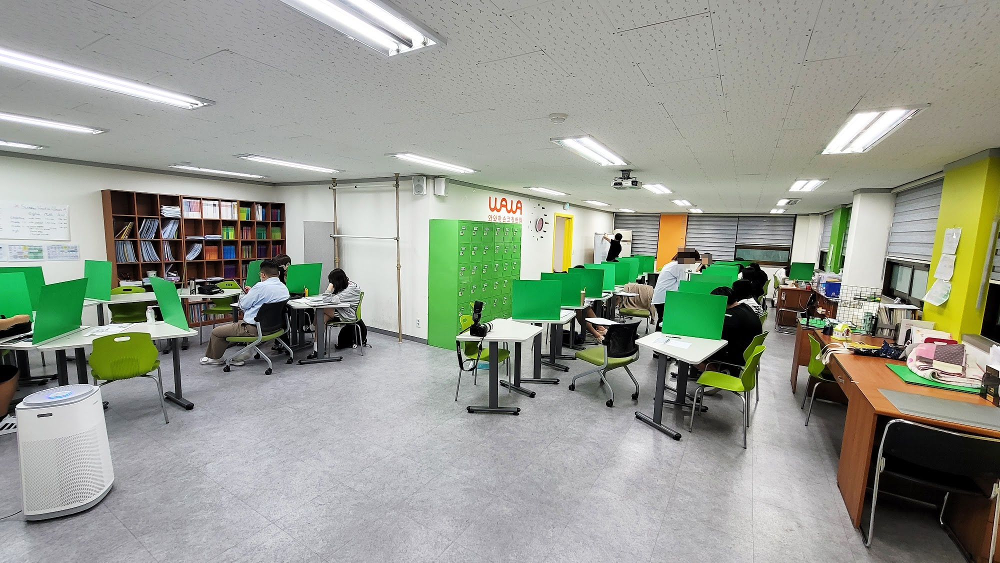
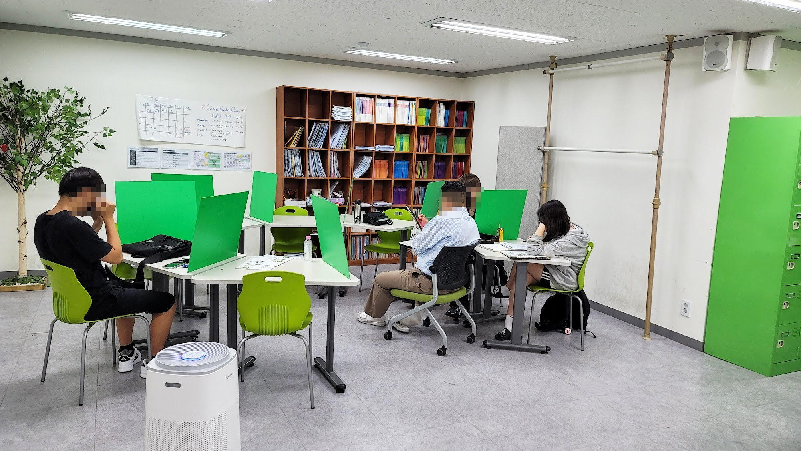
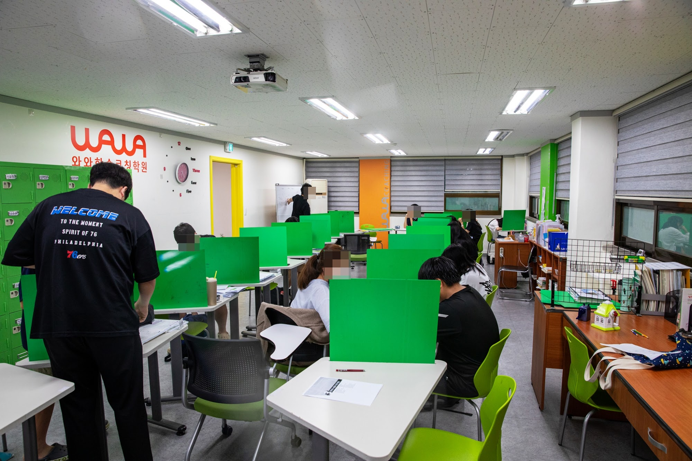
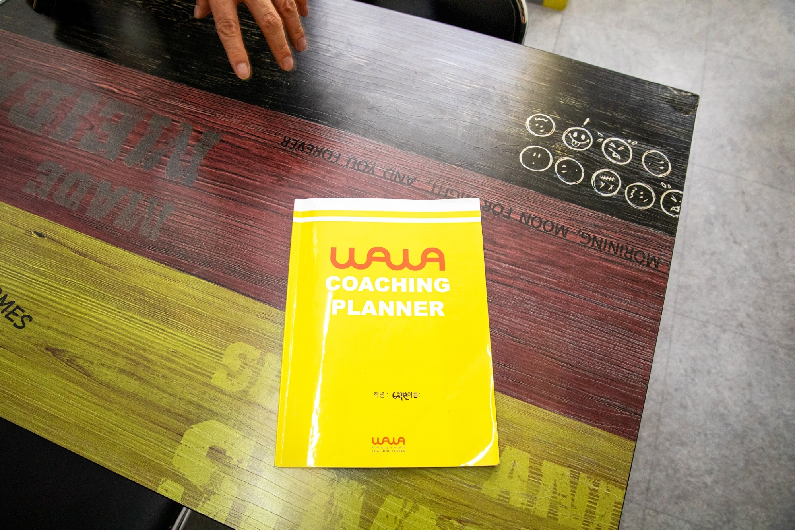
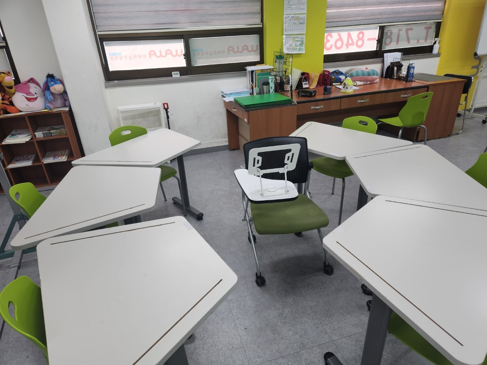

안녕하세요, 경기 광명시 철산동 와와학습코칭 철산점입니다. 여름방학이 어느새 막바지에 접어들었습니다. 오늘은 개학을 앞둔 방학 마무리와 2학기 대비 이야기를 학부모님께 전해드립니다.
곧 개학입니다 — 지금이 2학기의 출발선
방학이 끝나갈수록 공부 리듬이 흐트러지기 쉽습니다. 하지만 2학기 첫 시험은 개학 직후에 생각보다 빨리 다가옵니다. 철산점에서 철산초·하안북초·안현초·광덕초·하일초 학군 학생들을 지도해 보면, 방학 끝자락의 2~3주를 어떻게 보내느냐가 2학기 첫 성적을 크게 가릅니다. 지금은 늘어진 생활 리듬을 학교 시간표에 맞게 되돌리고, 2학기 앞부분을 미리 훑어 두어야 할 때입니다.
철산·광명 지역은 학구열이 높은 학군입니다. 그래서 철산점은 이 방학 마무리 시기에 개학 대비 전과목 코칭에 집중합니다. (2학기 정확한 시험 범위·일정은 학교 공지와 상담에서 함께 확인해 드립니다.)

철산점의 개학·2학기 대비 코칭
막연히 문제만 푸는 것으로는 부족합니다. 철산점은 이렇게 지도합니다.
- 수학 — 1학기 취약 단원을 짧게 메우고 2학기 앞 단원을 개념부터 선행, 틀린 유형을 분류해 약점을 좁히기 (광명 수학학원·수학 과외가 필요했던 학생에게)
- 영어 — 2학기 교과서 어휘·어법과 지문을 미리 익히고 서술형에 대비하기 (광명 영어학원·영어 과외)
- 국어 — 비문학 독해와 문학 개념을 학교 지문 중심으로 다지기 (국어학원)
- 과학·사회 — 개념을 흐름으로 이해하고 수행평가 유형을 미리 연습하기 (과학학원)
이렇게 방학 끝까지 흐름을 잡으면 2학기 첫 시험에서 출발선이 완전히 달라집니다.

왜 자기주도학습일까요
철산점은 진도만 빠르게 나가는 수업 대신, 학생이 스스로 계획하고 점검하는 힘을 길러 줍니다. 매일의 학습을 와와 코칭 플래너에 기록하고, 담당 코치가 하루를 함께 돌아보며 다음 계획을 세웁니다. 이해하지 못한 부분은 그냥 넘어가지 않고 반복학습으로 채웁니다. 개학 뒤 스스로 공부하는 습관이 잡혀 있는 학생은 학기 중에도 흔들리지 않습니다.

와와학습코칭 철산점 학년별 공부 방법
광명 와와학습코칭(와와학습코칭 철산점)은 초등학생·중학생·고등학생 각 학년에 맞는 공부 방법으로 지도합니다. 조용한 자습실·공부방에서 스스로 공부하고, 영어학원·수학학원·과학학원·국어학원처럼 과목별 코칭까지 한곳에서 받을 수 있습니다.
- 초등학생 (초3·초4·초5·초6) — 스스로 공부하는 습관과 기초 개념 잡기. 광명 철산 초등 수학학원·영어학원·공부방을 찾으신다면.
- 중학생 (중1·중2·중3) — 전과목 내신 대비와 고등 준비, 오답 정리와 서술형 훈련. 광명 중등 수학학원·영어학원·과학학원·국어학원.
- 고등학생 (고1·고2) — 내신과 수능을 함께 잡는 자기주도학습 플래닝과 취약 과목 집중. 광명 고등 영수학원·종합학원·자기주도학습.

와와학습코칭 철산점 위치와 주변
- 🚇 교통 — 지하철 7호선 철산역 인근, 철산동 도덕공원로 27 삼우빌딩 2층
- 🏢 인근 아파트 — 철산주공·철산센트럴푸르지오·광명두산위브트레지움 등 철산동 일대 단지에서 도보로 오실 수 있습니다.
와와학습코칭 철산점 인근 학교
광명 와와학습코칭(와와학습코칭 철산점)은 인근 학교 학생들의 내신·수능을 함께 준비합니다. 아래 학교에 다니는 학생이라면 영어학원·수학학원·과학학원·국어학원을 따로 찾을 필요 없이, 가까운 우리 센터에서 과목별 1:1 자기주도학습 코칭·과외를 받을 수 있습니다.
- 인근 초등학교 — 철산초등학교·하안북초등학교·안현초등학교·광덕초등학교·하일초등학교 영어학원·수학학원·과학학원·국어학원·공부방
- 인근 중·고등학교 — 철산동·광명 일대 중·고등학교 영어 과외·수학 과외·과학학원·국어학원 (자세한 배정 학교는 상담에서 확인해 주세요)
📍 와와학습코칭 철산점 센터 정보 자세히 보기 — 주소·전화·인근 학교 안내를 확인하실 수 있습니다.